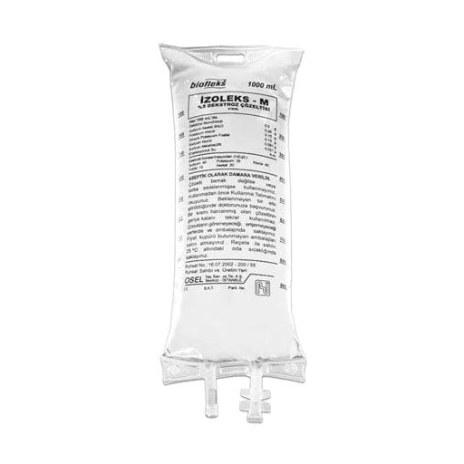

Biofleks İzoleks-M %5 Dekstroz IV İnfüzyonluk Çözelti (250 ml İnfüzyon Torbasi Setli)

Ne için kullanılır
KT · Bölüm 1BİOFLEKS %5 DEKSTROZ RİNGER LAKTAT , vücudun temel yapı taşları olan elektrolitleri içeren ve damar içi yoldan uygulanan bir çözeltidir. BİOFLEKS %5 DEKSTROZ RİNGER LAKTAT 500 ve 1000 mililitrelik Biofleks torbalarda sunulmuştur. Setli ve setsiz iki formu bulunmaktadır. BİOFLEKS %5 DEKSTROZ RİNGER LAKTAT vücudun susuz ve tuzsuz kalması (dehidratasyon) durumunun tedavisinde ve bu durumun oluşmasını önlemek için kullanılır. Vücuttan kaybedilen sıvının ve tuzun yerine konmasında işe yarar. Ayrıca vücudun enerji ihtiyacının bir bölümünü de karşılar. Bunun dışında vücutta bazı yapım- yıkım olayları sonucu bozulmuş asit-baz dengesinin düzenlenme ve idamesinde de kullanılır. BİOFLEKS %5 DEKSTROZ RİNGER LAKTAT, konsantre formda bulunan bazı damar içi uygulamaya uygun ilaçların damar içine uygulanmadan önce seyreltilmesi amacıyla da kullanılmaktadır.